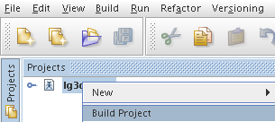

This document illustrates how easy it is to get a development environment up and running for the java.net Project Looking Glass with NetBeans. As you will read in this document, using NetBeans as the development tool for building and running Project Looking Glass makes Project Looking Glass development very simple.
To get started you will first need to set up your environment. Once you have verified that your environment is set up correctly you will be ready to build and run Looking Glass from NetBeans.
Before you start setting up your Project Looking Glass development environment, first check to make sure your system meets the following minimal requirements.
| Component | Linux Platform |
| Operating System | Most modern linux distributions should work, although there has been problems experienced when running it on a portage-based java-install. We suggest following this guide for installing all components listed manually instead of using portage. |
| CPU | 2 GHz or faster recommended |
| RAM | 512MB recommended |
| Graphics Card | 3D accelerated graphics card, with at least 16MB
VRAM and driver support for OpenGL, version 1.2 or greater. 16bit or 32bit color. IMPORTANT! 24-bit display depth is required! See instructions below for how to configure this. |
| Disk Space | 350MB |
Please see NVIDIA Driver Installation Tips below.
NOTE: It is especially important to consult these instructions if you have recently upgraded your driver to 1.0-6629, because LG3D requires additional configuration steps for 1.0-6629.
If you are successful in getting Project Looking Glass to run on other cards, or want to report problems with specific cards, please let us know using the discussion forum
Before you can build and run Project Looking Glass, you need to install a number of Java components. The simplest way to do this is to download all of the components and then install them in the order listed below.
Note: The installation instructions assume that you download all of the components into /tmp.
After downloading all of the components, install them by following the instructions below.
If you haven't previously registered at java.net then you'll need to create an account:
The Project Looking Glass Developer's Release requires a color depth of at least 24 bits. Many systems are configured by default with 16 bit color depths and the Project Looking Glass Developer's Release will not run correctly at this depth. You can identify the current display depth by running the following command:
% xdpyinfo | grep "depth of root"
depth of root window: 24 planes
If you see a value lower than 24, you must change the color depth. The process for changing the color depth varies by platform. Refer to the configuration instructions for your platform below:
Many Linux platforms use the XF86Config file to configure the display properties. To change the color depth on these systems:
Now that you have the necessary environment to build Looking Glass, you are ready to launch NetBeans, get the Looking Glass source code, build Looking Glass from source and run Looking Glass all from within NetBeans.
To launch NetBeans, simply type netbeans at the command prompt in a terminal window:
% netbeans
The above command will launch the NetBeans IDE.
The next step is to configure the NetBeans IDE to retrieve the Looking Glass source code from the java.net CVS repository. There are three Looking Glass CVS repositories which you must retrieve source file from, lg3d-core, lg3d-demo-apps and lg3d-incubator. The steps to setup and retrieve source files in NetBeans is described in the next three sub-sections, Getting the lg3d-core source, Getting the lg3d-demo-apps source and Getting the lg3d-incubator source.
In the NetBeans IDE, from the main menu select CVS > Checkout as shown in Figure 1 below.
Figure 1 CVS > Checkout
Next you will see the "CVS Checkout" dialog. There are several values you will need to enter on this screen. Each of the values below should be entered in this screen.
CVS Server Type: pserver
CVS Server Name: cvs.dev.java.net
Port: 2401
User Name: <enter your java.net user name> Repository Path: /cvs
Password: <enter your java.net password>
Your CVS Checkout form should look very
similar to the one shown in Figure 2 below.
Figure 2 CVS Checkout: establishing connection.
Click the "Next" button.Module(s): lg3d-coreSelect the Branch to Checkout
Working Directory: <source path where to place Looking Glass source files>e.g. /home/<user_name>/my-lg3d
The final CVS Checkout form should look very
similar to the one shown in Figure 3 below.
Figure 3 CVS Checkout: logged in
Once you have the CVS Checkout form completed press the "Finish" button.
After you have pressed the "Finish" button, the CVS Checkout form will go away and you will notice the output window, the bottom portion of the NetBeans IDE, will display the VCS Output from running your CVS checkout. The output in this VCS Output window should look very similar to that shown in Figure 4 below.
Figure 4 VCS Output Window
When the CVS checkout is completed, the status message at the bottom of the VCS Output window will say it has finished the Checkout.
From the main menu, select Window > Versioning. A Versioning window will now appear at the bottom of the NetBeans IDE such as the one shown in Figure 5 below. The IDE automatically lists all changed files in this window.
Figure 5 Versioning Window
As you did in the previous section "Getting the lg3d-core source", from the main menu select CVS > Checkout as shown in Figure 6 below to initiate the sequence to retrieve the source code for the lg3d-demo-apps.
This will again display the "CVS
Checkout" window. Fill in the values on the "CVS Checkout" form
as shown in Figure 7 below.
Note: To check out the current development branch leave the Branch entry blank.
IMPORTANT: Be sure to use the same working directory you specified in the "Getting the lg3d-core source" section and update the Module(s) field so that it reads "lg3d-demo-apps".
Figure 7 CVS Checkout (lg3d-demo-apps)
After specifying the values in the CVS Checkout window, press the "Finish" button to initiate the CVS check out of the lg3d-demo-apps source.
Again, you will notice the output window of the NetBeans IDE will display VCS Output for the lg3d-demo-apps as shown in Figure 8 below.
Figure 8 VCS Output (lg3d-demo-apps)
As you did in the previous section "Getting the lg3d-demo-apps source", from the main menu select CVS > Checkout as shown in Figure 9 below to initiate the sequence to retrieve the source code for the lg3d-incubator.
This will again display the "CVS
Checkout" window. Fill in the values on the "CVS Checkout" form
as shown in Figure 10 below.
Note: To check out the current development branch leave the Branch entry blank.
IMPORTANT: Be sure to use the same working directory you specified in the "Getting the lg3d-core source" section and update the Module(s) field so that it reads "lg3d-incubator".
Figure 10 CVS Checkout (lg3d-incubator)
After specifying the values in the CVS Checkout window, press the "Finish" button to initiate the CVS check out of the lg3d-incubator source.
Again, you will notice the output window of the NetBeans IDE will display VCS Output for the lg3d-incubator as shown in Figure 11 below.
Figure 11 VCS Output (lg3d-incubator)
You are now ready to open the Looking Glass project in NetBeans.
In the NetBeans IDE, select the File > Open Project menu item as shown in Figure 12 below.
Figure 12 File > Open Project
This will display the "Open Project" dialog. Traverse to the working directory you specified in the CVS Checkout and select the lg3d-core project. Notice there is a small icon on the lg3d-core folder and next to the name lg3d-core indicating it is a NetBeans project. An example "Open Project" dialog is displayed in Figure 13 which shows a working directory of /home/huntch/my-lg3d.
Figure 13 Open Project
After selecting the lg3d-core project, press the "Open Project Folder" button to load the Looking Glass NetBeans project into the NetBeans IDE.
In the projects window of the NetBeans IDE you will see the "lg3d-core" project as show in Figure 14 below.
Figure 14 lg3d-core
You now have successfully loaded the Looking Glass project into NetBeans. You are now ready to build Looking Glass in NetBeans.
In the NetBeans project window, right click on the lg3d-core project and select "Build Project as shown in Figure 15 below.
Figure 15 Build Project
This will initiate a build of the Looking Glass project. You will notice in the bottom of the NetBeans IDE, the output window will show the results of building the Looking Glass source files. An example NetBeans output window from building Looking Glass is shown in Figure 16 below.
Figure 16 Looking Glass build output
When the build of Looking Glass has completed, you will see a status message at the bottom of the output window saying it has finished building Looking Glass.
You have now successfully built Looking Glass in NetBeans. Next you will run the Looking Glass window manager from NetBeans.
To run the Looking Glass window manager from NetBeans, right click on the lg3d-core project and select the "Run Project" option as shown Figure 17 below.
Figure 17 Running Looking Glass
If you have configured your environment for running the Looking Glass window manager as described in this document and you have successfully built Looking Glass in NetBeans, you will see a window running the Looking Glass window manager which is very similar to that shown in Figure 16 below. There are additional applications being added to the Looking Glass window manager at the time of this writing. So, the applications shown on the task bar may differ slightly from those shown in Figure 18.
Figure 18 Looking Glass Window Manager
Notice that by clicking the CD icon on the taskbar it will open the CD viewer, a 3D demo application. If you mouse over the stack of CDs and click on the CD images you will see the application in action.
For additional operational information, click the icon to the right of the CD Viewer on the taskbar. This will open a panel that summarizes the operations supported by the demo. Note that the left most icon, a computer, launches an xterm window. This item demonstrates X11 application integration and may not work in all configurations.
The far right icon, skull and cross bones, when clicked will exit the Looking Glass window manager.
That's all there is to having an
environment where you can build and run the Looking Glass window
manager. Fun isn't it?
Now that you have enjoyed the ease at which you can build and run
Looking Glass in NetBeans, it is time to setup a NetBeans project so
you can make modifications to the lg3d-demo-apps in addition to being
able to modify the source code of lg3d-core.
Early in this document you retrieved the source files for
lg3d-demo-apps in the section title, "Getting the lg3d-demo-apps
source". In this section you will setup a NetBeans project so you can
make modifications to the lg3d-demo-apps, see those changes by
rebuilding and running Looking Glass in NetBeans.
To setup a NetBeans project for lg3d-demo-apps, you tell NetBeans to
create a new project as shown in Figure 19 by selecting File > New
Project from the main menu.
Figure 19 Create a New Project
After selecting the File > New Project menu item, the NetBeans
IDE will launch the New Project wizard. In the New Project wizard
select the General Category and Java Project with Existing Sources
project type as shown in Figure 20.
Figure 20 Choosing a General Java Project with
Existing Sources
Press the Next button to go to the Name and Location screen of the
New Project wizard. Enter a project name. I chose a project name of
"lg3d-demo-apps-nb-prj". Enter the path to the directory of the
lg3d-demo-apps source. The lg3d-demo-apps source is the directory you
specified in the "Getting the lg3d-demo-apps source" section.
Then, uncheck the "Set as Main Project" check box.
Note: If you forget to uncheck the "Set as Main Project" check box, you can always set the lg3d-core project as the main project in the Projects window at any time by right clicking on the lg3d-core project and selecting the "Set Main Project" option.
An example screen shot of the New Project wizard for the directory
where I placed the lg3d-demo-apps source is shown in Figure 21.
Figure 21 New Project Name and Project Location
Press the Next button to go to the Existing Sources screen of the
New Project wizard. On the Existing Sources screen you tell NetBeans
where to find source files for the lg3d-demo-apps.
Add the lg3d-demo-apps source folder by clicking on the Add Folder
button for the Source Package Folders. Traverse to and select the
lg3d-demo-apps/src/classes directory. Example screen shot for my
development environment is shown in Figure 22.
Figure 22 Location of lg3d-demo-apps sources
Press the Finish button to leave the New Project wizard.
In order to leverage NetBeans syntax highlighting, code completion
and instant compilation, we need to tell NetBeans where to find the
lg3d-core class files which the lg3d-demo-apps depends upon. You do
this by right clicking on the newly created project for lg3d-demo-apps
in the projects window and selecting the "Properties" option as shown
in Figure 23.
Figure 23 Selecting lg3d-demo-apps project properties
Tell tell NetBeans where to find the dependent lg3d-core class
files, on the Project Properties window, select "Libraries" for
Categories and select the "Compile" tab as shown in Figure 24.
Figure 24 Selecting compile time libraries
Click on the "Add Jar/Folder" button to add the lg3d-core/build/classes directory. Traverse to and select the lg3d-core/build/classes directory. The path to this directory will be the one you specified as the directory in the "Getting the lg3d-core source" section earlier.
An example screen shot showing the path to lg3d-core directory I
used is shown in Figure 25.
Figure 25 Selecting compile time libraries
Press the "Ok" button to leave the "Project Properties" wizard. You
will see NetBeans update lg3d-demo-apps classpath information with the
lg3d-core class files.
Expand the lg3d-demo-apps project to the source file
org.jdesktop.lg3d.apps.tapps.WebIcon.java as shown in Figure 26.
Figure 26 Expanding the lg3d-demo-apps source tree
Double click on the WebIcon.java file to load it in the
NetBeans editor. You can make edits to this file and compile it
directly by either pressing the shortcut key "F9" or by selecting the
Build > Compile menu item.
You can edit any file under the newly created lg3d-demo-apps project
and compile it. To test your modifications or changes to any of the
lg3d-demo-apps source code in the Looking Glass window manager, just
right click the lg3d-core project in the projects window and select
"Run Project" or select "Run > Main Project" from the main
menu. Or, you can simply press "F6" to compile the edited file.
Remember the lg3d-core project is the project you run the Looking Glass
window manager with. It will automatically pick up your modifications
to the lg3d-demo-apps project.
The Project Looking Glass team gratefully thanks Charlie Hunt (huntch) for providing these instructions!